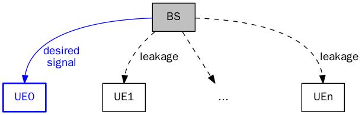

SLNR-based Beamforming
Table of Contents
Introduction
In coordinatd scheduling and beamforming (CS/CB), one of coordinatd multipoint (CoMP) transmission schemes, signal leakage noise power ratio (SLNR)-based beamforming is widely used.
Just as its name indicates, SLNR aims to maximize the ratio of desired signal power to the undesired leakage power and noise power.
This page is just written to summarize this SLNR-based beamforming scheme.
System model

Without loss of generality, we consider a simple scenario as shown in the figure above. Taking UE0 for instance, the BS intends to send data to it, i.e. the received signals at other UE's, e.g. UE1, …, UEn are all leakage. The SLNR can be expressed as
where
- \(P_N\) is the noise power at
UE0. - \(\mathbf{w}_0\) is the beamforming vector intended for
UE0. - \(\mathbf{H}_i\) is the channel matrix from the BS to
UEi, \(i=0,1,\ldots,n\).
SLNR-based beamforming
The \(\text{SLNR}_0\) above can be further written as a generalized Rayleigh quotient 1.
\begin{align} \text{SLNR}_0 = \frac{\mathbf{w}_0^H\mathbf{H}_0^H\mathbf{H}_0\mathbf{w}_0}{\mathbf{w}_0^H (P_N \mathbf{I} + \sum_{i\neq 0} \mathbf{H}_i^H \mathbf{H}_i) \mathbf{w}_0} \end{align}According to Rayleigh-Ritz theorem, if and only if \(\mathbf{w}_0\) equals the eigen vectors corresponding to the largest and smallest eigen values of \((P_N\mathbf{I} + \sum_{i\neq 0}\mathbf{H}_i^H\mathbf{H}_i)^{-1}\mathbf{H}_0^H\mathbf{H}_0\), \(\text{SLNR}_0\) reaches its minimal and maximal values, respectively.
Therefore, in order to maximize \(\text{SLNR}_0\), the beamforming vector or equivalently the SLNR-based beamforming vector for UE0, \(\mathbf{w}_0\), is the dominant eigen vector of \((P_N\mathbf{I} + \sum_{i\neq 0}\mathbf{H}_i^H\mathbf{H}_i)^{-1}\mathbf{H}_0^H\mathbf{H}_0\).